MEDIA


Meszaros is the founder of SMARTKAS, an agricultural technology creating a new strategy for improving crop yields. Utilizing AI, drones and clean energy, his company develops greenhouses and vertical farms that are hermetically closed, with inputs automatically controlled, enabling a pesticide-free production line. The Amsterdam-based company has already signed contracts with Royal families from Dubai, Sheiks and Princes from Saudi Arabia.
keep readingMeszaros is the founder of SMARTKAS, an agricultural technology creating a new strategy for improving crop yields. Utilizing AI, drones and clean energy, his company develops greenhouses and vertical farms that are hermetically closed, with inputs automatically controlled, enabling a pesticide-free production line. The Amsterdam-based company has already signed contracts with Royal families from Dubai, Sheiks and Princes from Saudi Arabia.
keep readingMeszaros is the founder of SMARTKAS, an agricultural technology creating a new strategy for improving crop yields. Utilizing AI, drones and clean energy, his company develops greenhouses and vertical farms that are hermetically closed, with inputs automatically controlled, enabling a pesticide-free production line. The Amsterdam-based company has already signed contracts with Royal families from Dubai, Sheiks and Princes from Saudi Arabia.
keep reading17min
17min
17min
Meszaros is the founder of SMARTKAS, an agricultural technology creating a new strategy for improving crop yields. Utilizing AI, drones and clean energy, his company develops greenhouses and vertical farms that are hermetically closed, with inputs automatically controlled, enabling a pesticide-free production line. The Amsterdam-based company has already signed contracts with Royal families from Dubai, Sheiks and Princes from Saudi Arabia.